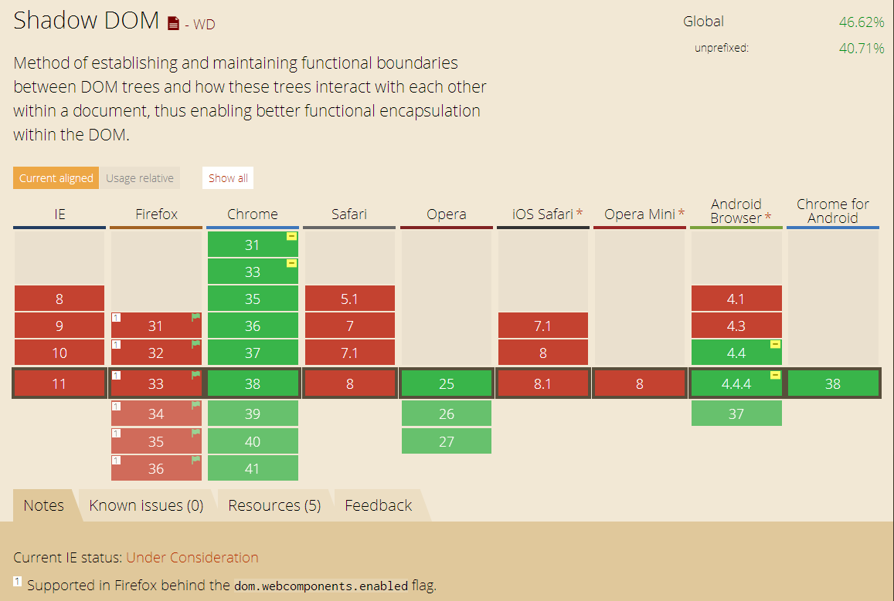
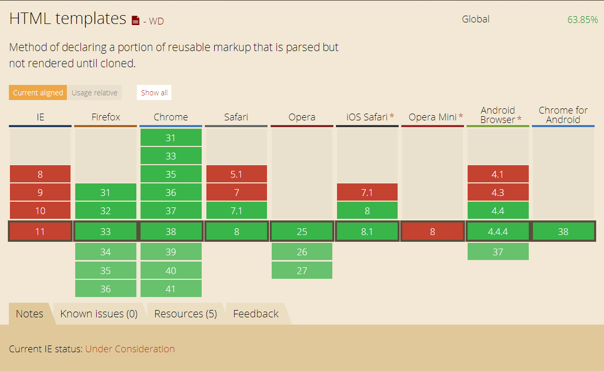

Web Components
Une révolution ?
Pourquoi des composants?
- des widgets ? des frameworks ? des pluggins ?
- Réutilisable
- Encapsulable
- Extendable
- "Composable"
C'est quoi ?
4 spécifications
- Html Import
- Shadow Dom
- Template
- Custom element
Html Import
Dans une page on peut charger
- du javascript
- de la css
- des images
- de la vidéo…
- MAIS PAS DE HTML
Comment faisait on ?
- iframe
- Ajax
- Hacks
- MAIS PAS SATISFAISANT
La solution: des imports
- Cors
- Chargé 1 seule fois dans l'ordre
- Ne bloque pas le parsing de la page
Acceder au contenu
Les éléments HTML et CSS sont chargés mais non insérés (disponibles). On y accede via la propriété import
Le javascript
- Exécuté dans le contexte de la page
- acces à son DOM ...
- ... et à celui de la page
Les events
Load et Error Event
Support

Shadow Dom
Vieux.!!!!
Les navigateurs l'utilisent déjà
C'est quoi Un 1 mot ?
L'ENCAPSUALTION

L'ENCAPSUALTION
- Conteneur isolé
- Nouveau type de noeud
- shadow root
- shadow host
Exemple
En Javascript
- createShadowRoot
- element.shadowRoot
Points d'insertions
le content ...
Hello too
Bla Bla Bla
Hello too
Bla Bla Bla
En CSS
Isolé mais de nouveaux sélecteurs:
- :host
- ::shadow
- /deep/
Support
Template
C'est quoi ?
Des modèles de DOM réutilisable
Pas dans le document
Pas d’effet de bords:
- DOM non rendu
- script non interprété
- image non chargée
Utilisation
- Récupération par sélecteur
- accès au contenu: content
- clone: devient vivant
- insertion du clone
Exemple

Support
Custom element

C'est quoi ?
- Définir de nouveaux types d’élément HTML
- Étendre des éléments existants
- Regrouper au sein d'une "balise" une fonctionnalité
Comment ?
- un nom (avec un -)
- un proto (HTMLElement par defaut)
Extend existing element
Attention aux balises
HTMLUnknownElement
HTMLElement
Cycle de vie
Déclaration vs enegistrement
- considéré comme unresolved
- pseudo-selector :unresolved
register
Callback
- createdCallback
- attachedCallback
- detachedCallback
- attributeChangedCallback
var myElemtProto = Object.create(HTMLElement.prototype);
myElemtProto.createdCallback = function() {};
var myElemt = document.registerElement('my-element', myElemtProto);
Ajouter du contenu
myEltProto.createdCallback = function() {
this.innerHTML = "un peu de contenu!";
};
innerHTML
Ajouter du contenu
myEltProto.createdCallback = function() {
var shadow = this.createShadowRoot();
shadow.innerHTML = "un peu de contenu!";
};
shadowDom
Ajouter du contenu
myEltProto.createdCallback = function() {
var t = document.querySelector('#sdtemplate');
var clone = document.importNode(t.content, true);
this.createShadowRoot().appendChild(clone);
};
Template
Ajouter du code
myEltProto.myFctn=function(){...}
Object.defineProperty(myEltProto, "bar", {value: 5});
Le prototype
Support

Styling custom elements
Custom element
Peuvent être séléctionés
my-element{
color:green;
}
FOUC
Flash Of Unstyled Content
- élément affiché avant qu’il soit enegistré
- :unresolved
Shadow DOM versus Light DOM
Hello
Styling light dom
- in and out
- ::content
#elemt span{
color:limegreen;
}
Hello
Shadow dom:
Shadow DOM
Hello
Inside shadow dom
Des sélecteurs
- ::host
- ::host(selector)
- ::host(pseudo-class)
- ::host-context(selector)
Outside shadow dom
- ::shadow
- /deep/
Bref
Des spécifications prometteuses mais...
UN SUPPORT TROP FAIBLE
Alors que fait on ?
POLYMER

- polyfills (platform.js)
- components (core-elements, paper-elements)
- sugaring (polymer.js)
X-TAG

- Web Components Polyfills (custom element et HTMLImports)
- X-Tag Custom Elements
- X-Tag Core Library